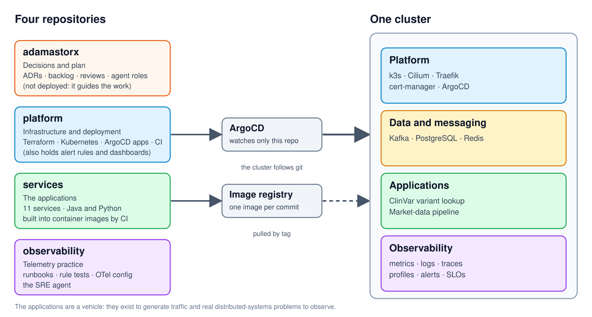
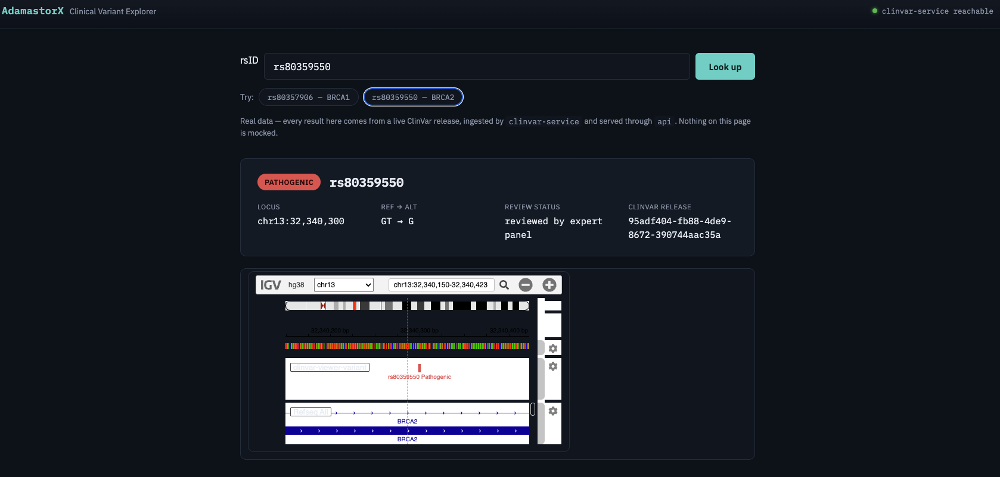
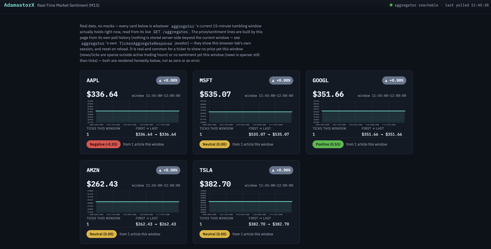

AdamastorX · a homelab on old hardware
Building a platform with AI agents:
what worked, what broke
One person, four repositories, one small Kubernetes cluster, twelve weeks.
Audience: engineering students, some senior developers and professors. Everything here is one project with one owner: an observation, not a benchmark. Every number on the slides has a source in the repository; the file docs/talk/slides-ai-development-loop.md lists them.
Part A · the lab
A homelab built from old hardware
Why
- Use hardware I already had
- No cloud budget
- Find out where old hardware breaks
Two experiments in one
- Run a real platform: Kubernetes, GitOps, Kafka, PostgreSQL, observability
- Find out what AI can actually do in building and running it
Where it started: a 10-year-old ThinkPad laptop running Xubuntu, also my daily machine.
A constraint as a learning tool. Define 'cluster' in one sentence for the students before using the word. The laptop was an i7-6600U with 2 physical cores, 4 threads and about 19 GiB of RAM. Evidence that I found its limits: with about 30 components its CPU requests reached 93% of what Kubernetes could allocate, and 5.1 GiB of swap was in use (docs/reviews/2026-08-09-hardware-constrained-strategy.md). Those limits drove real decisions.
Part A · the lab
One node per machine, not virtual machines
The laptop (2016)
i7-6600U · 2 cores, 4 threads
about 19 GiB RAM
Plan A: simulate several nodes with VMs. Measured: it did not fit.
A dedicated mini PC
Ryzen 7 8845HS · 16 threads
58 GiB RAM · 1 TB NVMe
Room to run the real thing.
- Even where VMs would fit, they hide what makes clusters hard: unequal hardware, a real network between nodes, real failure modes
- So: one node per physical machine, the old laptop to return later as the second node
ADR 0035 planned interim VMs on the laptop; the measurement falsified it (no VM agent ever fit that machine), so the plan was superseded. The reason for separate physical nodes is a design choice: it is closer to how a cluster is really managed. Do not say the second node is running: it is a next step.
Part A · the lab
My setup: a cluster I can reach from anywhere

- Tailscale gives me a private network: I reach the cluster from any of my machines, nothing is open to the internet
- One hosts-file entry maps 11 names to the cluster; no DNS server to run
- kubectl, ArgoCD, Grafana, Prometheus and the service UIs are all behind it
Drawn as the setup at the start, with the laptop as the host. A new machine needs three things: Tailscale login, the hosts-file lines, and trust in the internal certificate authority (plus a kubeconfig for kubectl). Why a hosts file instead of DNS: .test is a reserved name that never resolves publicly; MagicDNS only gives machine names; a real DNS server is one more component to operate, and a real domain costs money. The price is manual maintenance, reasonable for 11 names. Anecdote: for a while the host's IP was hardcoded and that caused trouble installing Cilium.
Part A · the lab
Moving to real hardware
- The platform moved off the laptop to a dedicated mini PC (Ryzen 7, 58 GiB RAM, 1 TB NVMe)
- Rehearsed first: a restore drill with measured recovery times, then the cutover on 30-31 August
- Described in git: the new host came up from Terraform and ArgoCD, and the data was copied across
- Same setup, same hostnames, new machine
Next: the old laptop comes back as a second node.
DRAFT built from the repository (ADR 0045, backlog #153-#155, platform/docs/runbooks/hardware-migration-drill.md): please check wording with the owner. The migration is the story of 'the same configuration moved machines because it lives in git'. The restore drill measured recovery times for the databases; the whole-drill wall-clock was not recorded.
Part B · the project
Four repositories, one cluster

- Each repository has one job: decisions, infrastructure, applications, telemetry practice
- ArgoCD watches one repository; code reaches the cluster through an image tag committed there
- The applications are a vehicle: they generate traffic and real distributed-systems problems
adamastorx holds the ADRs, backlog, reviews and the agent roles; platform holds Terraform, Kubernetes manifests, ArgoCD apps, CI, the alert rules and dashboards; services holds 11 applications in Java and Python; observability holds runbooks, rule tests, OTel config and the SRE agent. 33 namespaces and 48 ArgoCD applications today. A known cost of this split: the image tag is chosen in a different repository from the code, which caused a deployment that was left degraded. Automating that promotion is a planned improvement after this talk.
Part B · the project
Real workloads to produce real problems
ClinVar variant lookup
- An API looks up genetic variants and caches the answers
- A Python service ingests the public ClinVar data and tells the cache what changed
Market-data pipeline
- Live trades and news feeds into Kafka
- Sentiment is scored, joined with prices per ticker, and shown in a viewer
Stack: k3s, Cilium, ArgoCD, Argo Rollouts, KEDA, Traefik, cert-manager · Kafka, PostgreSQL, Redis · Prometheus, Grafana, Loki, Tempo, Pyroscope, OpenTelemetry
The product is irrelevant: it exists so Kafka, caches and databases do real work and I can observe what goes wrong in distributed systems. Maturity of the product is not a priority. The technology list is deliberately grouped: infrastructure, data and messaging, observability. A story worth telling: Cilium started on the project's exclusion list and was adopted later with an ADR; Vault, Crossplane and Backstage remain excluded.
Part C · how I work with AI
The loop

Walk top to bottom and point at the three orange boxes: I set the direction, I review and merge, I answer the alert. Agents work in the middle. Source: .claude/WORKFLOW.md.
Part C · how I work with AI
Roles: five agents with different powers
| Agent | Owns | Tools |
|---|
architect | design decisions, ADRs | read and write documents; no code editing, no shell |
platform-engineer | Terraform, Helm, ArgoCD, CI | edit and shell |
backend-engineer | Spring Boot, Kafka, Redis, Postgres | edit and shell |
observability-engineer | telemetry, dashboards, alerts, SLOs | edit and shell |
documentation-engineer | READMEs, ADRs after a merge | no shell |
The main session routes each task by label. The independent reviewer is not one of the five: it is a fresh agent with a rubric.
The point is not having many agents: it is separating contexts and giving each only the power it needs. The architect cannot change code, so a design decision has to land as an ADR. Source: .claude/agents/*.md and WORKFLOW.md. Be ready for: do they really use these roles? At the start they were not delegated to at all (see the problems section).
Part C · how I work with AI
Planning: issues, a backlog, milestones and decisions
- GitHub issues and projects track the work;
backlog.md (186 items) is the written source of truth
- Milestones M0 to M20, ordered by goal, each item with acceptance criteria and dependencies
- Definition of Ready and Done: Done means merged and verified live
- 47 ADRs: every non-trivial decision is written down, including the ones that were reversed
Not Jira: GitHub issues and the org-level project board, plus a Markdown backlog that is the real source of truth (the board mirrors it; see ADR 0042 for why). Sources: .claude/PROJECT.md, docs/roadmap/milestones.md, docs/adr.
Part C · how I work with AI
Reviews come in layers
- An agent authors the change and opens a pull request
- CI gates run automatically (tests, schemas, security scan, drift checks)
- An independent agent reviews platform-impacting changes, never the author
- I review; routine changes with green CI I sometimes let an agent review and merge to save my time
- Periodically, a staff-level review of the whole system
A second, unbiased read, not a rubber stamp from the same context that already talked itself into the approach.
Honest detail: the review happens in the terminal session, not as GitHub review objects: GitHub shows no formal reviews on the merged pull requests and requires zero approvals. That is on the gaps slide. The quote is from WORKFLOW.md and was written after the independent review was skipped on the first platform changes.
Part C · how I work with AI
Staff-level review, then a new backlog
| Date | What it found |
|---|
| 2026-08-11 | "Never ship a component without its alert" violated for a whole class; the rebuild had no whole-system acceptance criteria |
| 2026-08-15 | A 33-hour alert nobody answered: build rate had outrun operate rate |
| 2026-08-21 | Full audit: untracked debt, rules that were only prose, features unused |
| 2026-10-01 | Agent loops: adopt, narrowed; the human outer loop "unchanged, and load-bearing" |
| 2026-10-09 | A deployment left degraded by a merge-order gap; nothing would page if the cluster went dark. Became milestones M18 and M19 |
Each review ends in new backlog items, and the loop starts again. Eight reviews so far.
A fresh agent with a rubric, told to verify live and not assume. The latest was led by a stronger model that delegated evidence gathering to cheaper ones and drafting of backlog items to the cheapest. They are measured facts that became backlog items and ADRs. After that review I added one more milestone on top of its plan (M20, SLO dashboards): the human decides priority. Sources: docs/reviews/*.md.
Part C · how I work with AI
Where I sit in the loop
| The human decides | Example from this project |
|---|
| Direction and priorities | I added the SLO dashboards milestone on top of a review's plan |
| Design trade-offs | the architect writes the ADR, I accept or reject it |
| What merges | every pull request, however small |
| What touches the live system | a mutating kubectl needs explicit confirmation |
| Keep or kill | keep Mimir, recorded as a decision |
| Noticing it is wrong | the first SLO dashboard showed no SLOs; I saw it, the agent had not |
The human role is deciding, accepting accountability, and noticing when something plausible is wrong. Sources: WORKFLOW.md, backlog #135 and the SLO milestone.
Part C · how I work with AI
An experiment: bounded agent loops
1
iteration to green
$0.37, a diff identical to the human PR8
preconditions
one of them: no cluster credentials in the loop
- Verdict: adopt, narrowed, as a technique, not as a working model
- It converged in one step because the task was fully specified
- "The test went green" is never a merge criterion.
Tell it honestly, including the review's own critique: two agents agreeing shows the patch is the obvious one, not that it is correct. Sources: docs/reviews/2026-10-01-agentic-working-model-assessment.md, ADR 0046.
Part D · demo
The infrastructure, on one screen

- One mini PC: CPU 7%, memory 20%, disk 20%, 51 pods running
- The Wi-Fi link is on the dashboard: throughput and carrier drops
- GitOps state: 46 apps synced, 47 healthy, 1 not healthy
- Values at the time of the screenshot
Grafana, Infrastructure overview. Gauges turn amber at 70% and red at 90%. The cluster runs on a USB Wi-Fi dongle, so link drops are a first-class signal. The amber tiles are real: one app is degraded and one manual-sync app is intentionally out of sync.
Part D · demo
The services: what is running and how loaded

- 51 pods running, none unready at the moment this was taken
- Memory against limits per row: Kafka is the biggest consumer; Prometheus at 79% of its limit is the one to watch
- Requests and p95 latency per service underneath
Grafana, Services overview. This capture groups by namespace; the table has since become one row per workload, so re-capture before presenting. Traffic is deliberately low: the applications exist to generate load and failure modes.
Part D · demo
The network: who talks to whom

- Inside the namespace: the API, its PostgreSQL and its Redis
- Outside it: Kafka, Pyroscope, the OpenTelemetry collector, Prometheus, Traefik
- A namespace is a home, not a service: the map shows traffic, not ownership
- Cilium and Hubble (eBPF); network policies decide what is allowed
Hubble shows one namespace at a time; the peers around it are other namespaces. The API is the right example because it has network policies. 21 other namespaces have none yet (backlog #168). For the data flow of the market pipeline use the event-flows diagram.
Part D · demo
The product: a real ClinVar lookup

- Real data, nothing mocked: a ClinVar release ingested by
clinvar-service, served through api
- The answer: rs80359550, BRCA2, pathogenic, reviewed by expert panel, with the release that produced it
- Behind one click: browser, API, cache, ClinVar service, database
A small front end over the API's variant lookup. The release id is the one the cache entry was built from; when a newer release is ingested an event tells the API which keys to delete. An unrelated browser tooltip was painted out of this screenshot.
Part D · demo
The market pipeline: prices and sentiment

- Two streams joined: trades from a market feed and news sentiment, per ticker, in 15-minute windows
- Honest empty states: one tick and +0.00% because this was captured on a Saturday, with the market closed
- Sentiment is scored from news articles in the same window
The aggregator joins price ticks with sentiment scores over a tumbling window. The page says news and ticks are sparse outside trading hours and renders that honestly rather than as zero. To show movement capture on a weekday during US market hours.
Part E · what went wrong
The agents did not follow the workflow

Set up the three-cause split on the next slide. Sources: commits 0975d44, 30f50c7, b135581; ADR 0042; docs/operations/2026-08-11-cycle-1-the-33-hour-incident.md.
Part E · what went wrong
Three different causes
- A configuration bug (Jul 18). The agent files were prose only and never ran: no frontmatter, so the tool could not invoke them.
- Convenience (Jul 19-24). Design calls were made inline by the driving session instead of the architect; the independent review did not happen on the first platform changes.
- Friction (Aug 15). The agents were never delegated to through the mechanism; of 146 board cards, 12 ever had a status.
The first was our configuration error, not the AI disobeying. The second is the natural shortcut. The third is how any human team behaves.
Part E · what went wrong
The lesson: friction decides what survives
A process survives in proportion to how much friction it takes to skip it, not how well-reasoned it was when written down.
ADR 0042
- Review before merge survived because skipping it has consequences. The board did not, because skipping it cost nothing.
- The fix was never "tell the agents harder". It was: make the right thing the easy thing.
The central sentence of this part, and it is from the project's own ADR.
Part E · what went wrong
Green is not correct
- An alert that could never fire: a comparison between metrics with different labels. It passed review and CI; a live query found it. Another is still dead today: its metric does not exist.
- A dashboard with no SLOs: an SLO is an indicator, an objective and a window. The first version showed only the indicator against an alert threshold. I noticed; the agent had not.
- A heap sized from the wrong number: every comment said a share of the container limit; it was a share of the host's RAM, until a profiler showed it.
- After a rebuild, every liveness check passed and the system was broken in three places: the checks tested components, not the business path.
These support the thesis: the AI writes and reviews plausibly and the gates pass, but only measuring the real system finds the error. Include the agent's own mistakes: it shows the weak spot is the process, not one model. Sources: ADR 0020 addendum 2026-10-10, backlog #185, #161, docs/reviews/2026-08-11.
Part E · what went wrong
AI amplifies what is already there
Amplified for the better- ADRs, small single-concern pull requests
- tests written to fail first
- over 550 merged pull requests in 12 weeks
- docs updated in the same change
Amplified for the worse- decisions made inline, unreviewed
- rules that exist only as prose
- an alert nobody answers (33 hours)
- a board nobody maintains
Building got cheap. What stayed scarce: review, decisions, operation, accountability.
One project, one owner, no human-only baseline: an observation, not a benchmark.
Mark clearly that this is a single case, not a productivity measurement. The 33-hour alert is the 2026-08-11 incident: four alerts fired and nobody answered. Recompute the pull request count before presenting.
Part E · what went wrong
The bottleneck is the human (my view)
- Detection worked: 189 notifications delivered, zero failures. The response was human, up to 33 hours later.
- What blocked progress was human: a merge decision, which updates to accept, whether to keep a component.
- Faster agents move the queue to the human; they do not remove it.
Roles change, people stay.
- Developers: less typing, more specifying, designing gates, reviewing
- Operations: less running things, more owning the signal and the response
- New: someone builds and maintains the guardrails
This part is opinion; present it as such. The evidence is the staff reviews, the where-I-sit slide and the three causes. Source: the 33-hour incident write-up.
Part F · gates and guardrails
What we actually have

Do not read the whole list. Pick one per layer and tell a story: the security scan in CI, the hook that stops a destructive kubectl without confirmation. Sources: each repository's CI workflow, WORKFLOW.md, verified-agentic-loop.md.
Part F · gates and guardrails
What the gates don't cover
- GitHub requires 0 approvals in all four repositories: "the human reviews" is a rule, not an enforcement
observability has no required status check; enforce_admins is off everywhere- Network policies are not on every namespace yet
- The cluster's uplink is a USB Wi-Fi dongle on DHCP: the weak link of the whole system
- A green gate can still mean a wrong system: the answer is checks on the business path
Showing the gaps makes the talk more credible than the gate list alone. Checked on 2026-10-09: gh api branches/main/protection in each repository. The dongle problem is backlog #162; the owner decided to keep the dongle, so the work is making the control plane tolerate the link.
Part G · next steps
Next: more nodes, and a mesh
A second physical node
- The old laptop comes back as a worker
- Unequal machines: stateless services go to the small one, heavy components stay on the big one
- Opens experiments one node cannot do: node loss, draining, replicated storage
A service mesh (Istio)
- Chaos experiments showed it: when Kafka or PostgreSQL went down, API threads hung for 30 to 60 seconds
- One place to set timeouts and circuit breakers, for Java and Python alike
- Encrypted, authenticated calls between services
Second node: ADR 0047 (proposed): one server, one agent joined over Tailscale; the laptop is tainted and workloads opt in. A concrete assumption it will break: the CNI is configured to reach the API server at 127.0.0.1, which cannot work on a second node. Mesh: ADR 0024; the justification is the two chaos experiments in observability/chaos (Kafka producer blocking about 60 s, PostgreSQL connection acquisition about 30 s) and the plaintext in-cluster calls the project had already written down. Cilium keeps owning network policy; the mesh does not replace it. The friction of running both is part of what I want to learn. Do not give dates.
Part G · next steps
Next: more SLOs, tuned, and a canary that reads them
- More SLOs: turn the declared-but-unmeasurable ones into measured ones (the variant lookup, ClinVar data freshness, the workers)
- Fine-tune: recalibrate objectives against a 28-day window, available from the end of October
- An SLO-driven canary: today a new version is checked on error rate and latency before it takes all traffic; next, gate it on the error budget
The point of an SLO is a decision: deploy, hold or roll back.
Be precise: the canary exists and is proven in both directions, but its thresholds are the alert trip-points (5% errors, 500 ms p95), not the new objectives; the failure we induced was a readiness failure, not an SLO breach. The next step reads slo:error_budget_remaining. An induced SLO-failure drill would make the claim fully true. Sources: platform kubernetes/api/analysistemplate.yaml, ADR 0020 addendum, backlog #136, #137, #183-#185.
Takeaways
Three things to take home
- Make the right thing the easy thing. Prose rules decay; mechanical ones last.
- Gates are not proof. Verify against the real system, and say what you didn't verify.
- AI moves the bottleneck, it doesn't remove it. Plan for the human who reviews, decides and answers the page.
One owner · one system · twelve weeks · no control group.
Close with the thesis: the work becomes designing the system in which humans and agents work together.
· ← → navigate · N notes · F fullscreen